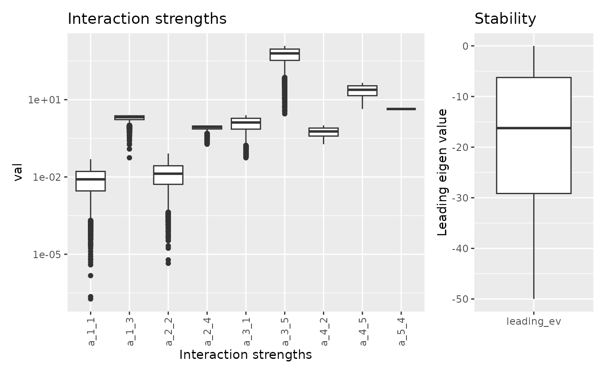

Interaction and uncertainty
Kevin Cazelles
23-02-2024
analyse_uncertainty.RmdStudy System
library(fwebinfr)
library(ggplot2)
library(ggraph)
library(patchwork)
library(tidygraph)
library(tidyr)Here we consider one system that has 5 species and consists of two linear chains with one top predator linking the two.
net <- fw_example_5species_2chains()
net## $A
## [,1] [,2] [,3] [,4] [,5]
## [1,] -1 0 -1 0 0
## [2,] 0 -1 0 -1 0
## [3,] 1 0 0 0 -1
## [4,] 0 1 0 0 -1
## [5,] 0 0 1 1 0
##
## $B
## [1] 10000 1000 200 100 20
##
## $R
## [1] 500 100 -500 -100 -1000
##
## $U
## row col unknown value name
## 1 1 1 TRUE -1 a_1_1
## 2 3 1 TRUE 1 a_3_1
## 3 2 2 TRUE -1 a_2_2
## 4 4 2 TRUE 1 a_4_2
## 5 1 3 TRUE -1 a_1_3
## 6 5 3 TRUE 1 a_5_3
## 7 2 4 TRUE -1 a_2_4
## 8 5 4 TRUE 1 a_5_4
## 9 3 5 TRUE -1 a_3_5
## 10 4 5 TRUE -1 a_4_5
##
## $sdB
## NULL
##
## $model
## function (t, y, pars)
## {
## return(list((pars$A %*% y + pars$R) * y))
## }
## <bytecode: 0x561950b6ea48>
## <environment: namespace:fwebinfr>
##
## attr(,"class")
## [1] "fw_problem"Here is the dynamics of the system.
## Using "tree" as default layoutBasic inference
Now, we call fw_infer() to predict interaction
strengths.
res <- net |> fw_infer()## Warning in lsei(E = E, F = F, G = G, H = H): No equalities - setting type = 2
head(res$prediction)## a_1_1 a_3_1 a_2_2 a_4_2 a_1_3 a_5_3 a_2_4
## 1 0.048841634 0.05791831 0.08583662 0.1416338 0.05791831 3.9591553 0.1416338
## 2 0.001444207 0.62064003 0.06412953 0.3566577 2.42778966 1.3541516 0.3587047
## 3 0.010520594 0.34932731 0.03826696 0.4697553 1.97397028 1.5340412 0.6173304
## 4 0.007669695 0.46459334 0.05780077 0.3757557 2.11651526 1.1434280 0.4219923
## 5 0.011821589 0.69398904 0.04785023 0.4410869 1.90892053 1.9397128 0.5214977
## 6 0.015781313 0.64624097 0.03254650 0.3079886 1.71093434 0.5958955 0.6745350
## a_5_4 a_3_5 a_4_5 leading_ev
## 1 2.081689 3.959155 2.081689 -4.819539
## 2 7.291697 285.320017 12.832883 -4.638453
## 3 6.931918 149.663654 18.487765 -23.688365
## 4 7.713144 207.296670 13.787785 -15.378358
## 5 6.120574 321.994521 17.054347 -29.064702
## 6 8.808209 298.120484 10.399432 -20.767728Let’s visualize the range of interaction strength and stability.
fw_range_plot(res)
fw_range_compare_plot(res, show_lev = FALSE)
We can plot the dynamics for the most and the least stable systems.
net_most_stable <- fw_model(
A = fw_predict_A(res, which.min(res$prediction$leading_ev)),
B = fw_predict_B(res, which.min(res$prediction$leading_ev)),
R = net$R
)
net_least_stable <- fw_model(
A = fw_predict_A(res, which.max(res$prediction$leading_ev)),
B = fw_predict_B(res, which.max(res$prediction$leading_ev)),
R = net$R
)
p1 <- fw_ode_plot(net_most_stable, net$B/1.5, seq(0, 2, 0.0001)) +
ggtitle("Minimum leading eigen value (most stable)")
p2 <- fw_ode_plot(net_least_stable, net$B/1.5, seq(0, 2, 0.0001)) +
ggtitle("Maximum leading eigen value (least stable)")
p1 / p2Narrowing down uncertainty
Let’s fix A[5, 3] to the mean of sampled values and
observed the new range of parameters values.
## Warning in lsei(E = E, F = F, G = G, H = H): No equalities - setting type = 2
Let’s do the same changes but this time for A[3, 1]
## Warning in lsei(E = E, F = F, G = G, H = H): No equalities - setting type = 2Combining the two:
## Warning in lsei(E = E, F = F, G = G, H = H): No equalities - setting type = 2Imcreasing one interaction strenght
Here we increase A[3, 1] from 0.1 to 2.5.
## Warning in scale_y_continuous(trans = "log10"): log-10
## transformation introduced infinite values.## Warning: Removed 3000 rows containing non-finite outside the scale range
## (`stat_boxplot()`).Now we increase A[5, 3] from 0.1 to 4.9.
Now Here we increase A[3, 1] the from 0.1 to 2.5.